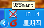

-
安bUPSmart
- 1. c舭惭b程序UPSmart_setup.exe，x癜惭b路酵瓿砂惭b。
- 2. ]意在Windows XP， NT 4.0/2000及Server下安b，先使用超管理T身份登。
-
启动UPSmart
- 1. 安b完成後，在系y桌面a生用程序的快捷方式K且在系y_始菜诋a生登快捷方式。
- 2. ]意系y在用舻卿windows後，可以O置樽釉服粘绦颉
- 3. 件俞幔在系yD瓤梢钥吹匠绦D耍程序主界面如下D，K且首次有枰入件序列，如果未入序列，件定r提示入序列。
- 4. 入正_序列後，@示出件的主界面，K且在任谥出F如下界面：
-
| UPSmartcUPSB接正常 |
|  | UPSmartcUPS通信常 |
-
卸dUPSmart
- 若要卸dUPSmart，t在UPSmart程序MYx"卸dUPSmart"K_J即可完成h除。
-
- UPSmart:c翎幔M入主程序。
- 卸dUPSmart:c翎幔M入卸d程序。